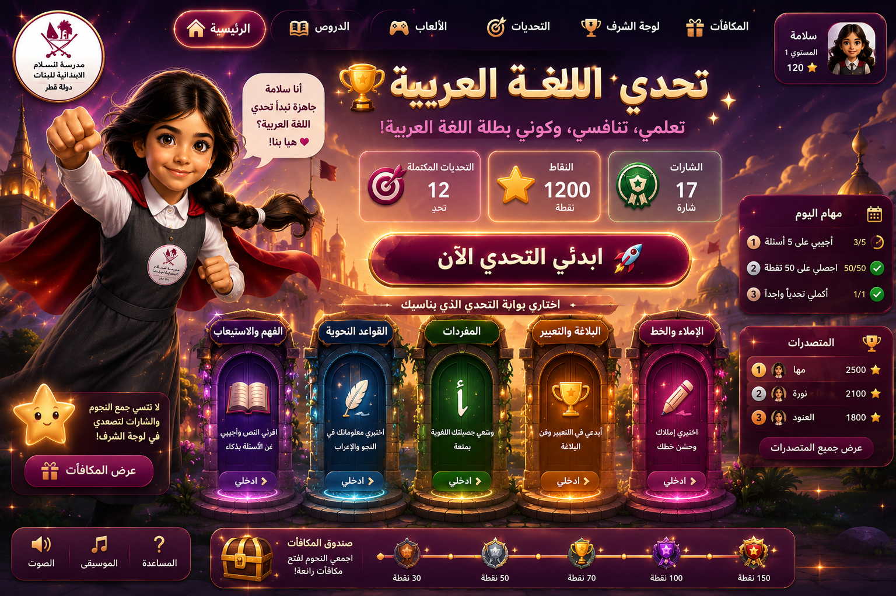

النقاط:
0
⭐ | بنك الأسئلة:
0
مرحبًا يا بطلة السلام! اختاري بوابتك، وابدئي تحدي اللغة العربية.
تم إخفاء أي كتابة إضافية فوق البوستر؛ اضغطي على البوابات نفسها.
تحدي اللغة العربية
اختاري الإجابة الصحيحة.
بوابة
+10 نقاط
سلامة ستعطيك تلميحًا قصيرًا بعد السؤال.
سؤال جديد ✨
العودة للواجهة